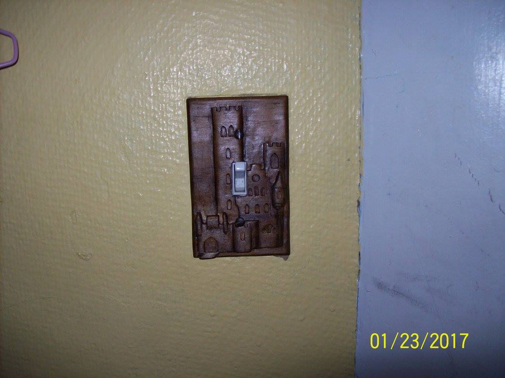

My first real success. Prior to this handmade chess set, I had only made a lot of misshapen lumps of wood. It was also the longest project I ever did--it took me 3 years! And yes, we took it out for a spin immediately. I won.
Who wants a boring plastic lightswitch cover? I've always loved castles and other medieval things (you'll notice a theme in my carvings) and I wanted to add a little castle to my room.
When my dad had hip surgery, I set out to make him a cane that was more stylish than titanium. This cane has vine patterns swirling up to the handle.
This frame has a cool story. I submitted it to a silent auction to raise money for a local ministry. My friend's parents came to the auction, where I met them for the first time. Without knowing I had made the frame, they bid on it and won. Later, I married that friend, and his parents now keep our wedding photo in that frame.
It's not for stabbing--it's only wood after all. It's a pretty, decorative knife that I hang on my wall. It makes me feel cool.
Anna Lewis Campbell
aalxbt@mail.missouri.edu aalxbt@umsystem.edu